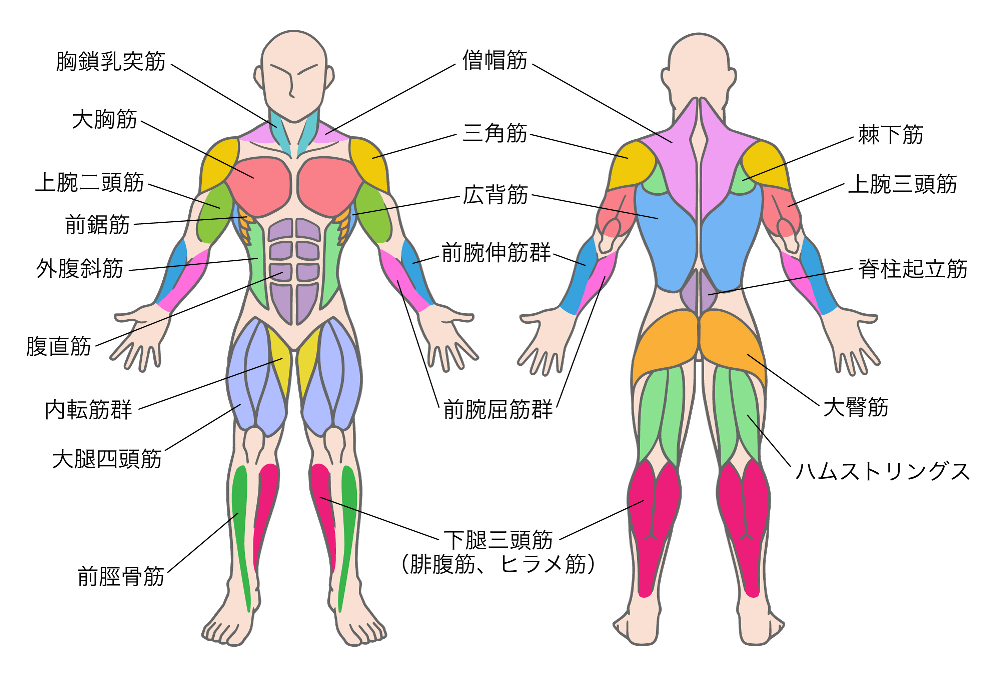

{% extends "layout.html" %}

{% block title %}
    筋トレ
{% endblock %}

{% block main %}
    <div class="container">

        <div class="section">

            <h2>文字クリックしたらグーグルの検索画面に行くやつ</h2>

            
            <map name="ImageMap">
                <area shape="rect" coords="33,24,134,68" href="/result?muscle=胸鎖乳突筋" target="_blank" rel="noopener noreferrer" alt="胸鎖乳突筋">
                <area shape="rect" coords="36,77,119,108" href="/result?muscle=大胸筋" target="_blank" rel="noopener noreferrer" alt="大胸筋">
                <area shape="rect" coords="13,120,120,155" href="/result?muscle=上腕二頭筋" target="_blank" rel="noopener noreferrer" alt="上腕二頭筋">
                <area shape="rect" coords="39,156,107,187" href="/result?muscle=前鋸筋" target="_blank" rel="noopener noreferrer" alt="前鋸筋">
                <area shape="rect" coords="20,184,100,220" href="/result?muscle=外腹斜筋" target="_blank" rel="noopener noreferrer" alt="外腹斜筋">
                <area shape="rect" coords="12,242,80,275" href="/result?muscle=腹直筋" target="_blank" rel="noopener noreferrer" alt="腹直筋">
                <area shape="rect" coords="25,290,108,325" href="/result?muscle=腹直筋" target="_blank" rel="noopener noreferrer" alt="内転筋群">
                <area shape="rect" coords="29,328,132,362" href="/result?muscle=腹直筋" target="_blank" rel="noopener noreferrer" alt="大腿四頭筋">
                <area shape="rect" coords="49,420,142,450" href="/result?muscle=腹直筋" target="_blank" rel="noopener noreferrer" alt="前脛骨筋">
                <area shape="rect" coords="335,22,410,69" href="/result?muscle=腹直筋" target="_blank" rel="noopener noreferrer" alt="僧帽筋">
                <area shape="rect" coords="343,80,407,117" href="/result?muscle=腹直筋" target="_blank" rel="noopener noreferrer" alt="三角筋">
                <area shape="rect" coords="337,126,409,167" href="/result?muscle=腹直筋" target="_blank" rel="noopener noreferrer" alt="広背筋">
                <area shape="rect" coords="321,174,422,206" href="/result?muscle=腹直筋" target="_blank" rel="noopener noreferrer" alt="前腕伸筋群">
                <area shape="rect" coords="319,289,426,329" href="/result?muscle=腹直筋" target="_blank" rel="noopener noreferrer" alt="前腕屈筋群">
                <area shape="rect" coords="290,383,455,442" href="/result?muscle=腹直筋" target="_blank" rel="noopener noreferrer" alt="下腿三頭筋">
                <area shape="rect" coords="632,74,710,116" href="/result?muscle=腹直筋" target="_blank" rel="noopener noreferrer" alt="棘下筋">
                <area shape="rect" coords="627,122,729,158" href="/result?muscle=腹直筋" target="_blank" rel="noopener noreferrer" alt="上腕三頭筋">
                <area shape="rect" coords="633,182,734,216" href="/result?muscle=腹直筋" target="_blank" rel="noopener noreferrer" alt="脊柱起立筋">
                <area shape="rect" coords="611,288,672,322" href="/result?muscle=腹直筋" target="_blank" rel="noopener noreferrer" alt="大臀筋">
                <area shape="rect" coords="587,332,740,375" href="/result?muscle=ハムストリングス" target="_blank" rel="noopener noreferrer" alt="ハムストリングス">
            </map>
        </div>
    </div>
{% endblock %}